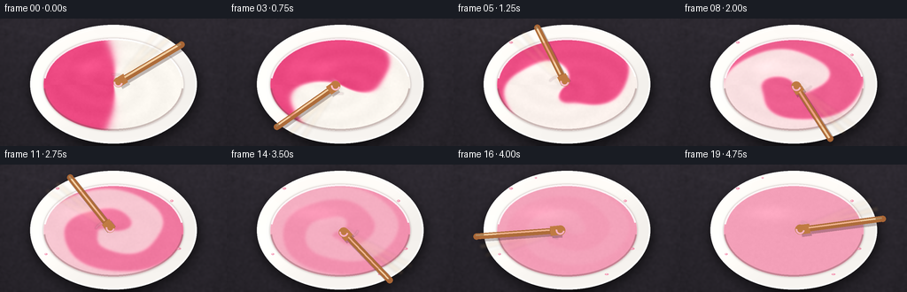
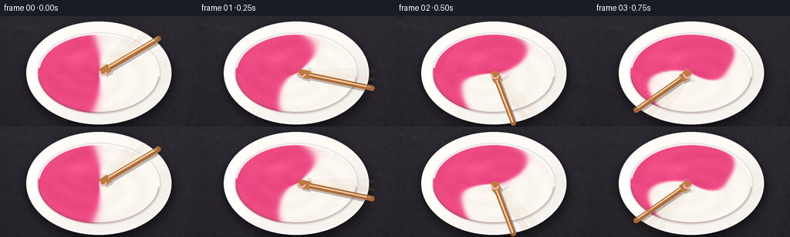
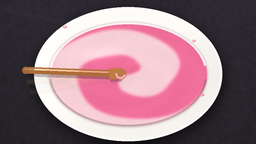

CODING AGENTS AS PIXEL WORLD MODELS
traex/GPT-5.6-Sol · phygen_125
点击播放 · 原生 RGB 像素
逐轮保存的候选
回放视频、检查图与代码变化。
每份候选均可单独播放。实际图片检查记录在下方工具轨迹中。
候选 01播放与检查图
点击播放 · 原生 RGB 像素


展开代码变化
--- 上一保存版本
+++ 本次保存版本
@@ -0,0 +1,208 @@
+from pathlib import Path
+import math
+import numpy as np
+from PIL import Image, ImageDraw, ImageFilter
+from scipy.ndimage import gaussian_filter
+import artifact_io
+
+# Procedural RGB animation: equal pink/white paint, rapidly stirred to a uniform blend.
+W, H, N = 256, 144, 20
+S = 3
+w, h = W*S, H*S
+rng = np.random.default_rng(125)
+Y, X = np.mgrid[0:h, 0:w]
+xf, yf = X/S, Y/S
+
+
+def smoothstep(a, b, x):
+ z = np.clip((x-a)/(b-a), 0.0, 1.0)
+ return z*z*(3.0-2.0*z)
+
+
+def alpha_over(base, color, alpha):
+ """Composite an RGB field/constant over base with scalar alpha field."""
+ a = np.asarray(alpha, np.float32)
+ if a.ndim == 2:
+ a = a[..., None]
+ c = np.asarray(color, np.float32)
+ return base*(1.0-a) + c*a
+
+
+def ellipse_soft(cx, cy, rx, ry, feather=0.7):
+ d = np.sqrt(((xf-cx)/rx)**2 + ((yf-cy)/ry)**2)
+ # feather is in approximate output pixels
+ return np.clip((1.0-d) * min(rx, ry) / feather + 0.5, 0, 1)
+
+
+def layer_on_array(arr, layer):
+ la = np.asarray(layer, np.float32)
+ a = la[..., 3:4]/255.0
+ return arr*(1-a) + la[..., :3]*a
+
+# Static charcoal worktop: fine grain and a few subtle mineral streaks.
+noise = rng.normal(0, 1, (h, w))
+noise = gaussian_filter(noise, 1.2*S)
+noise = noise / (noise.std()+1e-6)
+illum = 8.0*(1.0-yf/H) + 2.5*np.sin(xf/29.0) + 1.2*noise
+base = np.zeros((h, w, 3), np.float32)
+base[..., 0] = 36 + illum
+base[..., 1] = 33 + illum*0.90
+base[..., 2] = 39 + illum*1.05
+# soft diagonal slate veins
+for off, strength in [(8, 2.3), (91, 1.5), (167, 1.2)]:
+ line = np.exp(-((yf - (0.23*xf + off)) / 1.8)**2)
+ base += line[...,None]*strength
+base = np.clip(base, 0, 255)
+
+# Bowl geometry.
+cx, cy = 128.0, 74.0
+outer = ellipse_soft(cx, cy, 94, 67, 0.65)
+inner = ellipse_soft(cx, cy+0.5, 79.0, 52.0, 0.60)
+
+# Bowl cast shadow.
+shadow_im = Image.new('RGBA', (w,h), (0,0,0,0))
+sd = ImageDraw.Draw(shadow_im)
+sd.ellipse(tuple(int(v*S) for v in (33, 12, 225, 145)), fill=(0,0,0,145))
+shadow_im = shadow_im.filter(ImageFilter.GaussianBlur(6*S))
+scene_static = layer_on_array(base, shadow_im)
+
+# Warm ceramic bowl body with a directional glaze gradient.
+ceramic = np.empty_like(scene_static)
+ceramic_light = 243 + 9*(1-yf/H) - 7*((xf-cx)/100) + 3*np.cos((xf+2*yf)/37)
+ceramic[...,0] = ceramic_light + 5
+ceramic[...,1] = ceramic_light + 2
+ceramic[...,2] = ceramic_light - 2
+scene_static = alpha_over(scene_static, np.clip(ceramic,0,255), outer)
+
+# A gentle inner-rim occlusion; paint is composited later over the central opening.
+inner_shadow_ring = np.clip(gaussian_filter(inner, 1.2*S)-inner, 0, 1)
+scene_static = alpha_over(scene_static, (118,91,91), inner_shadow_ring*0.7)
+
+# Coordinates in normalized paint ellipse.
+u = (xf-cx)/79.0
+v = (yf-(cy+0.5))/52.0
+r = np.sqrt(u*u+v*v)
+theta = np.arctan2(v,u)
+
+# Fixed speckle gives thick paint a tactile, non-digital surface.
+tex = gaussian_filter(rng.normal(size=(h,w)), 0.8*S)
+tex /= tex.std()+1e-6
+
+frames = []
+for i in range(N):
+ q = i/(N-1)
+ scene = scene_static.copy()
+
+ # Differential rotation: the center turns much faster than the perimeter,
+ # winding the initial half-and-half division into physical spiral ribbons.
+ wind = 12.8*q*(1.12 - 0.83*np.clip(r,0,1)**1.45)
+ wobble = 0.24*np.sin(3*theta + 8.0*q)*(1-r) + 0.10*np.sin(5*theta-5*q)
+ source_angle = theta - wind - wobble
+ separation = -np.cos(source_angle) + 0.055*np.sin(3*source_angle + 1.4)
+ pink_fraction = 1.0/(1.0 + np.exp(-18.0*separation))
+
+ # Viscous folding is followed by diffusion. During the final second the
+ # remaining ribbons collapse smoothly to the exact equal-volume average.
+ pink_fraction = gaussian_filter(pink_fraction, (0.38 + 1.45*q)*S)
+ blend = smoothstep(0.10, 0.94, q)**1.18
+ pink_fraction = 0.5 + (pink_fraction-0.5)*(1.0-blend)
+
+ white = np.array([251., 247., 240.])
+ pink = np.array([236., 72., 129.])
+ paint = white[None,None,:]*(1-pink_fraction[...,None]) + pink[None,None,:]*pink_fraction[...,None]
+
+ # Thick raised edges along color folds and a broad satin highlight.
+ gy, gx = np.gradient(pink_fraction)
+ ridge = np.clip(np.hypot(gx,gy)*18.0, 0, 1) * (1-0.72*blend)
+ directional = (gx*0.9 + gy*0.35) * 32.0
+ swirl_sheen = np.sin(15.5*r - 2.6*theta + 13*q) * 2.5*(1-blend)
+ broad_spec = 11*np.exp(-(((u+0.34)/0.48)**2 + ((v+0.38)/0.22)**2)*2.2)
+ paint += (ridge*8 + directional + swirl_sheen + broad_spec + tex*0.75)[...,None]
+ # Slightly darker vortex depression emphasizes vigorous circular motion.
+ vortex = np.exp(-((u/0.16)**2+(v/0.14)**2))
+ paint -= (5.5*vortex*(1-0.5*blend))[...,None]
+ paint = np.clip(paint,0,255)
+ scene = alpha_over(scene, paint, inner)
+
+ # Vector details atop the rendered paint: wakes, ceramic rim, splashes, stirrer.
+ im = Image.fromarray(np.uint8(np.clip(scene,0,255)), 'RGB').convert('RGBA')
+
+ # Curved wake trailing the moving stick (paint-colored, not a diagram arrow).
+ wake = Image.new('RGBA', (w,h), (0,0,0,0))
+ wd = ImageDraw.Draw(wake)
+ phi = -0.72 + i*1.02
+ wake_col = (250,191,208,75 if i < 17 else 40)
+ pts=[]
+ for k in range(18):
+ a = phi - 0.055*k
+ rr = 18.5 + 0.10*k
+ pts.append((int((cx+rr*math.cos(a))*S), int((cy+10.5*math.sin(a))*S)))
+ wd.line(pts, fill=wake_col, width=2*S, joint='curve')
+ wake = wake.filter(ImageFilter.GaussianBlur(0.7*S))
+ im = Image.alpha_composite(im, wake)
+
+ # Rim outlines and ceramic glints provide strong depth ordering.
+ rim = Image.new('RGBA', (w,h), (0,0,0,0))
+ rd = ImageDraw.Draw(rim)
+ ob = tuple(int(v*S) for v in (34,7,222,141))
+ ib = tuple(int(v*S) for v in (49,22.5,207,126.5))
+ rd.ellipse(ob, outline=(255,255,252,220), width=2*S)
+ rd.arc(ib, 188, 350, fill=(255,255,255,220), width=2*S)
+ rd.arc(ib, 5, 175, fill=(115,83,83,92), width=2*S)
+ rd.arc(tuple(int(v*S) for v in (38,10,218,138)), 205, 324, fill=(255,255,255,145), width=S)
+ im = Image.alpha_composite(im, rim)
+
+ # Small realistic paint flecks appear as the stirring accelerates.
+ if i >= 3:
+ splash = Image.new('RGBA', (w,h), (0,0,0,0))
+ sp = ImageDraw.Draw(splash)
+ flecks = [
+ (65,27,2.2,1.1,5), (194,41,1.7,1.2,7), (202,95,2.4,1.1,9),
+ (52,101,1.6,1.0,11), (173,124,2.1,0.9,13), (93,15,1.3,0.8,15)
+ ]
+ for sx,sy,rx0,ry0,start in flecks:
+ if i >= start:
+ col=(240,121,158,190) if start%2 else (248,181,200,180)
+ sp.ellipse((int((sx-rx0)*S),int((sy-ry0)*S),int((sx+rx0)*S),int((sy+ry0)*S)), fill=col)
+ sp.ellipse((int((sx-rx0*.45)*S),int((sy-ry0*.5)*S),int(sx*S),int(sy*S)), fill=(255,229,236,115))
+ im = Image.alpha_composite(im,splash)
+
+ # Rapid wooden stir stick: two faint prior poses produce natural motion blur.
+ sticks = Image.new('RGBA', (w,h), (0,0,0,0))
+ st = ImageDraw.Draw(sticks)
+ def pose(angle):
+ tip = np.array([cx + 18.5*math.cos(angle), cy + 10.5*math.sin(angle)])
+ end = tip + np.array([84*math.cos(angle), 57*math.sin(angle)])
+ inner_tip = tip - np.array([11*math.cos(angle), 7.5*math.sin(angle)])
+ return tip,end,inner_tip
+ for lag, alpha in [(0.34,22),(0.18,38)]:
+ pt,pe,pin = pose(phi-lag)
+ st.line([(int(pt[0]*S),int(pt[1]*S)),(int(pe[0]*S),int(pe[1]*S))], fill=(223,180,123,alpha), width=6*S)
+ st.line([(int(pin[0]*S),int(pin[1]*S)),(int(pt[0]*S),int(pt[1]*S))], fill=(248,213,170,alpha), width=10*S)
+ sticks = sticks.filter(ImageFilter.GaussianBlur(1.4*S))
+ im = Image.alpha_composite(im, sticks)
+
+ # Current stick shadow, shaft, paddle, and narrow lacquer highlight.
+ stick = Image.new('RGBA', (w,h), (0,0,0,0))
+ sd = ImageDraw.Draw(stick)
+ pt,pe,pin = pose(phi)
+ off=np.array([1.8,2.4])
+ sd.line([(int((pt[0]+off[0])*S),int((pt[1]+off[1])*S)),(int((pe[0]+off[0])*S),int((pe[1]+off[1])*S))], fill=(44,24,27,75), width=8*S)
+ sd.line([(int((pin[0]+off[0])*S),int((pin[1]+off[1])*S)),(int((pt[0]+off[0])*S),int((pt[1]+off[1])*S))], fill=(44,24,27,65), width=12*S)
+ sd.line([(int(pt[0]*S),int(pt[1]*S)),(int(pe[0]*S),int(pe[1]*S))], fill=(174,108,57,255), width=7*S)
+ sd.line([(int(pin[0]*S),int(pin[1]*S)),(int(pt[0]*S),int(pt[1]*S))], fill=(192,123,66,255), width=11*S)
+ # rounded endpoints and wood grain/highlight
+ for p,rad,col in [(pin,5.5,(191,122,66,255)),(pe,3.5,(168,101,53,255))]:
+ sd.ellipse((int((p[0]-rad)*S),int((p[1]-rad)*S),int((p[0]+rad)*S),int((p[1]+rad)*S)),fill=col)
+ sd.line([(int((pt[0]-1)*S),int((pt[1]-1)*S)),(int((pe[0]-1)*S),int((pe[1]-1)*S))], fill=(240,190,126,170), width=2*S)
+ # paint clinging to submerged paddle tip
+ sd.arc((int((pin[0]-5)*S),int((pin[1]-5)*S),int((pin[0]+5)*S),int((pin[1]+5)*S)),10,190,fill=(249,181,202,210),width=2*S)
+ im = Image.alpha_composite(im,stick)
+
+ # Downsample supersampled render for clean anti-aliased RGB output.
+ frame = im.convert('RGB').resize((W,H), Image.Resampling.LANCZOS)
+ frames.append(np.asarray(frame, dtype=np.uint8))
+
+frames = np.stack(frames, axis=0)
+artifact_io.save(frames, Path(__file__).resolve().parent)
+print(f"saved {frames.shape} {frames.dtype}")
候选 02播放与检查图
点击播放 · 原生 RGB 像素

展开代码变化
--- 上一保存版本
+++ 本次保存版本
@@ -125,7 +125,7 @@
scene = alpha_over(scene, paint, inner)
# Vector details atop the rendered paint: wakes, ceramic rim, splashes, stirrer.
- im = Image.fromarray(np.uint8(np.clip(scene,0,255)), 'RGB').convert('RGBA')
+ im = Image.fromarray(np.uint8(np.clip(scene,0,255))).convert('RGBA')
# Curved wake trailing the moving stick (paint-colored, not a diagram arrow).
wake = Image.new('RGBA', (w,h), (0,0,0,0))
可观测工具轨迹
实际执行的命令与返回图片。
命令 1exit 0
/bin/bash -lc "cat prompt.txt && printf '\\n--- GENERATION_RULES.md ---\\n' && cat GENERATION_RULES.md && printf '\\n--- task_spec.json ---\\n' && cat task_spec.json"
命令 2exit 0
/bin/bash -lc "find . -maxdepth 2 -type f -printf '%p\\n' | sort && printf '\\n--- tools ---\\n' && command -v ffmpeg || true && command -v python3 || true"
命令 3exit 0
/bin/bash -lc "sed -n '1,260p' artifact_io.py"
命令 4exit 0
/bin/bash -lc "python3 - <<'PY' import importlib.util for m in ['numpy','PIL','imageio','cv2','scipy']: print(m, bool(importlib.util.find_spec(m))) PY"
命令 5exit 0
/bin/bash -lc "cat > generate.py <<'PY'
from pathlib import Path
import math
import numpy as np
from PIL import Image, ImageDraw, ImageFilter
from scipy.ndimage import gaussian_filter
import artifact_io
# Procedural RGB animation: equal pink/white paint, rapidly stirred to a uniform blend.
W, H, N = 256, 144, 20
S = 3
w, h = W*S, H*S
rng = np.random.default_rng(125)
Y, X = np.mgrid[0:h, 0:w]
xf, yf = X/S, Y/S
def smoothstep(a, b, x):
z = np.clip((x-a)/(b-a), 0.0, 1.0)
return z*z*(3.0-2.0*z)
def alpha_over(base, color, alpha):
\"\"\"Composite an RGB field/constant over base with scalar alpha field.\"\"\"
a = np.asarray(alpha, np.float32)
if a.ndim == 2:
a = a[..., None]
c = np.asarray(color, np.float32)
return base*(1.0-a) + c*a
def ellipse_soft(cx, cy, rx, ry, feather=0.7):
d = np.sqrt(((xf-cx)/rx)**2 + ((yf-cy)/ry)**2)
# feather is in approximate output pixels
return np.clip((1.0-d) * min(rx, ry) / feather + 0.5, 0, 1)
def layer_on_array(arr, layer):
la = np.asarray(layer, np.float32)
a = la[..., 3:4]/255.0
return arr*(1-a) + la[..., :3]*a
# Static charcoal worktop: fine grain and a few subtle mineral streaks.
noise = rng.normal(0, 1, (h, w))
noise = gaussian_filter(noise, 1.2*S)
noise = noise / (noise.std()+1e-6)
illum = 8.0*(1.0-yf/H) + 2.5*np.sin(xf/29.0) + 1.2*noise
base = np.zeros((h, w, 3), np.float32)
base[..., 0] = 36 + illum
base[..., 1] = 33 + illum*0.90
base[..., 2] = 39 + illum*1.05
# soft diagonal slate veins
for off, strength in [(8, 2.3), (91, 1.5), (167, 1.2)]:
line = np.exp(-((yf - (0.23*xf + off)) / 1.8)**2)
base += line[...,None]*strength
base = np.clip(base, 0, 255)
# Bowl geometry.
cx, cy = 128.0, 74.0
outer = ellipse_soft(cx, cy, 94, 67, 0.65)
inner = ellipse_soft(cx, cy+0.5, 79.0, 52.0, 0.60)
# Bowl cast shadow.
shadow_im = Image.new('RGBA', (w,h), (0,0,0,0))
sd = ImageDraw.Draw(shadow_im)
sd.ellipse(tuple(int(v*S) for v in (33, 12, 225, 145)), fill=(0,0,0,145))
shadow_im = shadow_im.filter(ImageFilter.GaussianBlur(6*S))
scene_static = layer_on_array(base, shadow_im)
# Warm ceramic bowl body with a directional glaze gradient.
ceramic = np.empty_like(scene_static)
ceramic_light = 243 + 9*(1-yf/H) - 7*((xf-cx)/100) + 3*np.cos((xf+2*yf)/37)
ceramic[...,0] = ceramic_light + 5
ceramic[...,1] = ceramic_light + 2
ceramic[...,2] = ceramic_light - 2
scene_static = alpha_over(scene_static, np.clip(ceramic,0,255), outer)
# A gentle inner-rim occlusion; paint is composited later over the central opening.
inner_shadow_ring = np.clip(gaussian_filter(inner, 1.2*S)-inner, 0, 1)
scene_static = alpha_over(scene_static, (118,91,91), inner_shadow_ring*0.7)
# Coordinates in normalized paint ellipse.
u = (xf-cx)/79.0
v = (yf-(cy+0.5))/52.0
r = np.sqrt(u*u+v*v)
theta = np.arctan2(v,u)
# Fixed speckle gives thick paint a tactile, non-digital surface.
tex = gaussian_filter(rng.normal(size=(h,w)), 0.8*S)
tex /= tex.std()+1e-6
frames = []
for i in range(N):
q = i/(N-1)
scene = scene_static.copy()
# Differential rotation: the center turns much faster than the perimeter,
# winding the initial half-and-half division into physical spiral ribbons.
wind = 12.8*q*(1.12 - 0.83*np.clip(r,0,1)**1.45)
wobble = 0.24*np.sin(3*theta + 8.0*q)*(1-r) + 0.10*np.sin(5*theta-5*q)
source_angle = theta - wind - wobble
separation = -np.cos(source_angle) + 0.055*np.sin(3*source_angle + 1.4)
pink_fraction = 1.0/(1.0 + np.exp(-18.0*separation))
# Viscous folding is followed by diffusion. During the final second the
# remaining ribbons collapse smoothly to the exact equal-volume average.
pink_fraction = gaussian_filter(pink_fraction, (0.38 + 1.45*q)*S)
blend = smoothstep(0.10, 0.94, q)**1.18
pink_fraction = 0.5 + (pink_fraction-0.5)*(1.0-blend)
white = np.array([251., 247., 240.])
pink = np.array([236., 72., 129.])
paint = white[None,None,:]*(1-pink_fraction[...,None]) + pink[None,None,:]*pink_fraction[...,None]
# Thick raised edges along color folds and a broad satin highlight.
gy, gx = np.gradient(pink_fraction)
ridge = np.clip(np.hypot(gx,gy)*18.0, 0, 1) * (1-0.72*blend)
directional = (gx*0.9 + gy*0.35) * 32.0
swirl_sheen = np.sin(15.5*r - 2.6*theta + 13*q) * 2.5*(1-blend)
broad_spec = 11*np.exp(-(((u+0.34)/0.48)**2 + ((v+0.38)/0.22)**2)*2.2)
paint += (ridge*8 + directional + swirl_sheen + broad_spec + tex*0.75)[...,None]
# Slightly darker vortex depression emphasizes vigorous circular motion.
vortex = np.exp(-((u/0.16)**2+(v/0.14)**2))
paint -= (5.5*vortex*(1-0.5*blend))[...,None]
paint = np.clip(paint,0,255)
scene = alpha_over(scene, paint, inner)
# Vector details atop the rendered paint: wakes, ceramic rim, splashes, stirrer.
im = Image.fromarray(np.uint8(np.clip(scene,0,255)), 'RGB').convert('RGBA')
# Curved wake trailing the moving stick (paint-colored, not a diagram arrow).
wake = Image.new('RGBA', (w,h), (0,0,0,0))
wd = ImageDraw.Draw(wake)
phi = -0.72 + i*1.02
wake_col = (250,191,208,75 if i < 17 else 40)
pts=[]
for k in range(18):
a = phi - 0.055*k
rr = 18.5 + 0.10*k
pts.append((int((cx+rr*math.cos(a))*S), int((cy+10.5*math.sin(a))*S)))
wd.line(pts, fill=wake_col, width=2*S, joint='curve')
wake = wake.filter(ImageFilter.GaussianBlur(0.7*S))
im = Image.alpha_composite(im, wake)
# Rim outlines and ceramic glints provide strong depth ordering.
rim = Image.new('RGBA', (w,h), (0,0,0,0))
rd = ImageDraw.Draw(rim)
ob = tuple(int(v*S) for v in (34,7,222,141))
ib = tuple(int(v*S) for v in (49,22.5,207,126.5))
rd.ellipse(ob, outline=(255,255,252,220), width=2*S)
rd.arc(ib, 188, 350, fill=(255,255,255,220), width=2*S)
rd.arc(ib, 5, 175, fill=(115,83,83,92), width=2*S)
rd.arc(tuple(int(v*S) for v in (38,10,218,138)), 205, 324, fill=(255,255,255,145), width=S)
im = Image.alpha_composite(im, rim)
# Small realistic paint flecks appear as the stirring accelerates.
if i >= 3:
splash = Image.new('RGBA', (w,h), (0,0,0,0))
sp = ImageDraw.Draw(splash)
flecks = [
(65,27,2.2,1.1,5), (194,41,1.7,1.2,7), (202,95,2.4,1.1,9),
(52,101,1.6,1.0,11), (173,124,2.1,0.9,13), (93,15,1.3,0.8,15)
]
for sx,sy,rx0,ry0,start in flecks:
if i >= start:
col=(240,121,158,190) if start%2 else (248,181,200,180)
sp.ellipse((int((sx-rx0)*S),int((sy-ry0)*S),int((sx+rx0)*S),int((sy+ry0)*S)), fill=col)
sp.ellipse((int((sx-rx0*.45)*S),int((sy-ry0*.5)*S),int(sx*S),int(sy*S)), fill=(255,229,236,115))
im = Image.alpha_composite(im,splash)
# Rapid wooden stir stick: two faint prior poses produce natural motion blur.
sticks = Image.new('RGBA', (w,h), (0,0,0,0))
st = ImageDraw.Draw(sticks)
def pose(angle):
tip = np.array([cx + 18.5*math.cos(angle), cy + 10.5*math.sin(angle)])
end = tip + np.array([84*math.cos(angle), 57*math.sin(angle)])
inner_tip = tip - np.array([11*math.cos(angle), 7.5*math.sin(angle)])
return tip,end,inner_tip
for lag, alpha in [(0.34,22),(0.18,38)]:
pt,pe,pin = pose(phi-lag)
st.line([(int(pt[0]*S),int(pt[1]*S)),(int(pe[0]*S),int(pe[1]*S))], fill=(223,180,123,alpha), width=6*S)
st.line([(int(pin[0]*S),int(pin[1]*S)),(int(pt[0]*S),int(pt[1]*S))], fill=(248,213,170,alpha), width=10*S)
sticks = sticks.filter(ImageFilter.GaussianBlur(1.4*S))
im = Image.alpha_composite(im, sticks)
# Current stick shadow, shaft, paddle, and narrow lacquer highlight.
stick = Image.new('RGBA', (w,h), (0,0,0,0))
sd = ImageDraw.Draw(stick)
pt,pe,pin = pose(phi)
off=np.array([1.8,2.4])
sd.line([(int((pt[0]+off[0])*S),int((pt[1]+off[1])*S)),(int((pe[0]+off[0])*S),int((pe[1]+off[1])*S))], fill=(44,24,27,75), width=8*S)
sd.line([(int((pin[0]+off[0])*S),int((pin[1]+off[1])*S)),(int((pt[0]+off[0])*S),int((pt[1]+off[1])*S))], fill=(44,24,27,65), width=12*S)
sd.line([(int(pt[0]*S),int(pt[1]*S)),(int(pe[0]*S),int(pe[1]*S))], fill=(174,108,57,255), width=7*S)
sd.line([(int(pin[0]*S),int(pin[1]*S)),(int(pt[0]*S),int(pt[1]*S))], fill=(192,123,66,255), width=11*S)
# rounded endpoints and wood grain/highlight
for p,rad,col in [(pin,5.5,(191,122,66,255)),(pe,3.5,(168,101,53,255))]:
sd.ellipse((int((p[0]-rad)*S),int((p[1]-rad)*S),int((p[0]+rad)*S),int((p[1]+rad)*S)),fill=col)
sd.line([(int((pt[0]-1)*S),int((pt[1]-1)*S)),(int((pe[0]-1)*S),int((pe[1]-1)*S))], fill=(240,190,126,170), width=2*S)
# paint clinging to submerged paddle tip
sd.arc((int((pin[0]-5)*S),int((pin[1]-5)*S),int((pin[0]+5)*S),int((pin[1]+5)*S)),10,190,fill=(249,181,202,210),width=2*S)
im = Image.alpha_composite(im,stick)
# Downsample supersampled render for clean anti-aliased RGB output.
frame = im.convert('RGB').resize((W,H), Image.Resampling.LANCZOS)
frames.append(np.asarray(frame, dtype=np.uint8))
frames = np.stack(frames, axis=0)
artifact_io.save(frames, Path(__file__).resolve().parent)
print(f\"saved {frames.shape} {frames.dtype}\")
PY
python3 generate.py"命令 6exit 0
/bin/bash -lc "python3 - <<'PY'
from pathlib import Path
import numpy as np
from PIL import Image
fs=sorted(Path('frames').glob('*.png'))
a=np.stack([np.asarray(Image.open(f)) for f in fs])
print('shape',a.shape,'dtype',a.dtype,'range',a.min(),a.max())
print('mean abs frame deltas',np.abs(np.diff(a.astype(float),axis=0)).mean(axis=(1,2,3)).round(2).tolist())
print('files',*[str(x) for x in ['pixels.npz','index.html','inspection.png','transition_check.png'] if Path(x).is_file()])
PY"命令 7exit 0
/bin/bash -lc "set -e
python3 generate.py
python3 - <<'PY'
import json
from pathlib import Path
import numpy as np
from PIL import Image
p=Path('.')
spec=json.loads((p/'task_spec.json').read_text())
fs=sorted((p/'frames').glob('*.png'))
assert len(fs)==spec['frames'], len(fs)
a=np.stack([np.asarray(Image.open(f).convert('RGB')) for f in fs])
assert a.shape==(spec['frames'],spec['height'],spec['width'],3),a.shape
assert a.dtype==np.uint8
z=np.load('pixels.npz')['pixels']
assert z.shape==(spec['height'],spec['width'],spec['frames']),z.shape
for f in ['generate.py','pixels.npz','index.html','inspection.png','transition_check.png']:
assert (p/f).is_file() and (p/f).stat().st_size>0,f
print('contract_ok',a.shape,a.dtype)
print('artifact_sizes', {f:(p/f).stat().st_size for f in ['pixels.npz','index.html','inspection.png']})
PY"视觉工具实际返回图片 1

视觉工具实际返回图片 2

保存候选 2 份；完成命令 7 次；可验证图片返回 2 张。原始 API 响应与完整日志保留在本地。